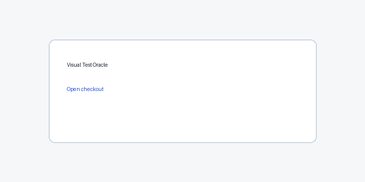
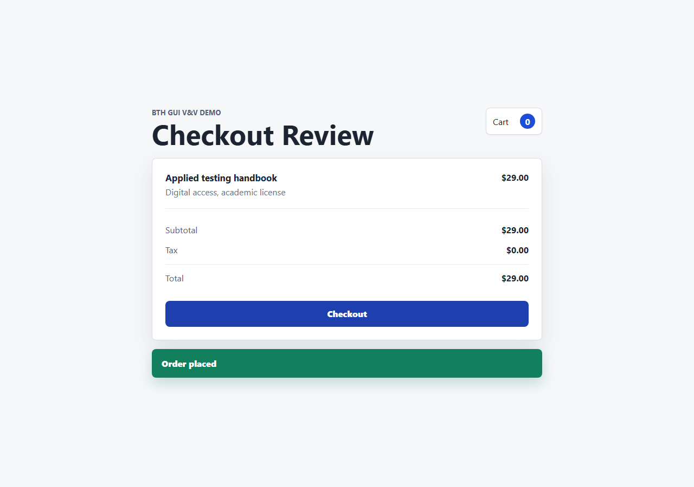
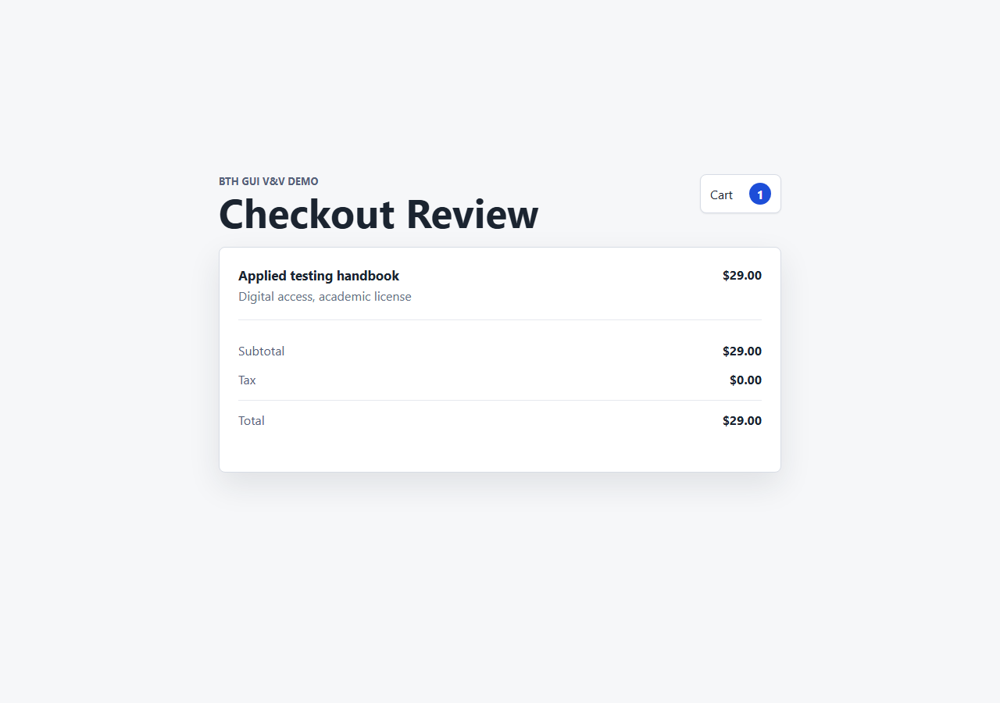
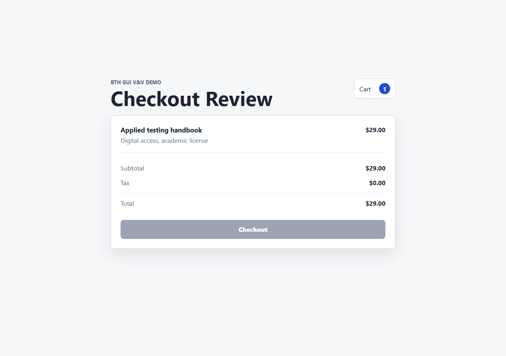
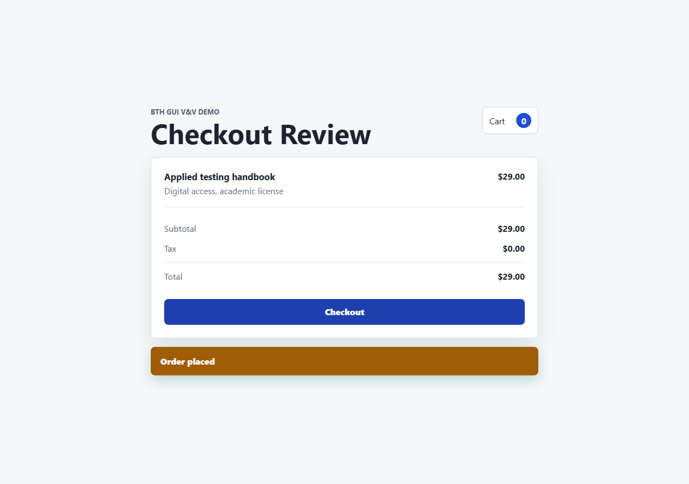

Engineering case study - GUI regression testing with multimodal oracles
Visual Test Oracle
This report evaluates a screenshot-based GUI test oracle with k-run voting, controlled UI mutants, benign UI changes, and self-healing locator fallback.
Bug detection90%
False positives0%
Maintenance resilience100%
Mean agreement100%
Method
YAML test specs drive a Playwright runner. At each checkpoint the runner captures a screenshot and asks an oracle whether the UI matches the natural-language expected outcome. The oracle is run three times per checkpoint and majority vote is used as the final verdict. CI uses a deterministic DOM-backed oracle; OpenAI and Ollama adapters can be enabled for model-backed runs.
Results
| Case | Expected | Actual | Agreement | Healing | Reason |
|---|---|---|---|---|---|
checkout_success_state__clean__default |
pass | pass | 100% | 0 | DOM-visible state matches expected outcome |
checkout_total_state__clean__default |
pass | pass | 100% | 0 | DOM-visible state matches expected outcome |
checkout_success_state__hidden_checkout__default |
fail | fail | 100% | 1 | confirmation banner is not visible; confirmation text is not close to Order placed; confirmation banner is not visually green/success; cart count did not reset to 0 |
checkout_success_state__disabled_button__default |
fail | fail | 100% | 1 | confirmation banner is not visible; confirmation text is not close to Order placed; confirmation banner is not visually green/success; cart count did not reset to 0 |
checkout_success_state__wrong_color__default |
fail | fail | 100% | 0 | confirmation banner is not visually green/success |
checkout_success_state__wrong_copy__default |
fail | fail | 100% | 0 | confirmation text is not close to Order placed |
checkout_success_state__cart_not_reset__default |
fail | fail | 100% | 0 | cart count did not reset to 0 |
checkout_total_state__missing_total__default |
fail | fail | 100% | 0 | total row is not visible |
checkout_total_state__wrong_currency__default |
fail | fail | 100% | 0 | total price changed |
checkout_success_state__layout_shift__default |
fail | pass | 100% | 0 | DOM-visible state matches expected outcome |
checkout_success_state__missing_confirmation__default |
fail | fail | 100% | 0 | confirmation banner is not visible; confirmation text is not close to Order placed; confirmation banner is not visually green/success |
checkout_success_state__extra_error__default |
fail | fail | 100% | 0 | confirmation text is not close to Order placed; confirmation banner is not visually green/success |
checkout_success_state__clean__benign_copy |
pass | pass | 100% | 0 | DOM-visible state matches expected outcome |
selector_healing_checkout__clean__renamed_selector |
pass | pass | 100% | 1 | DOM-visible state matches expected outcome |
Evidence
Short demo sequence:






Limitations and Next Steps
- The committed CI path avoids API spending; OpenAI-backed runs require
OPENAI_API_KEY. - The local vision comparison uses Ollama
qwen2.5vl:latestwhen installed and is intentionally bounded to a small subset on CPU-only machines. - The self-healing locator path records when it falls back from a failed CSS selector to model or accessibility-guided clicking.